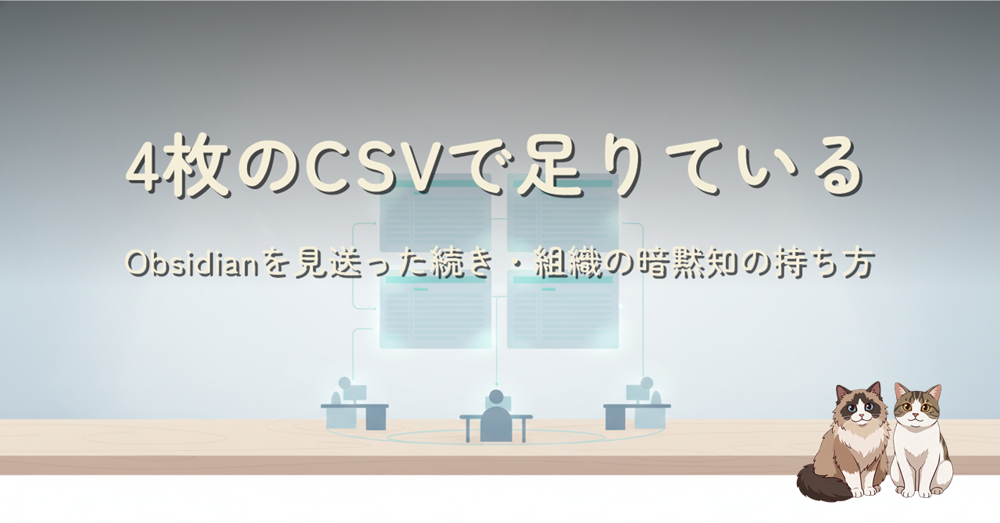

個人で始めた「薄いマスタデータ」運用を 3 人のチームに広げて 3 週間。組織には資料に落ちていないメタ情報（担当・呼称・連携関係）が大量にあり、それを 4 枚の CSV 台帳と 3 層分離、AI の話題トリガー参照で全員と AI が使える形にした記録です。事実の CSV に「判断の前提」の md を足した 2 層構成が、一番の精度向上でした。
溜めない PKM（前作「今は Obsidian を使わない選択」）の続編です。チーム展開で効いたのは、people / companies / servers / applications の 4 CSV に台帳を絞ること、秘密と機微を最初から別の場所に分けること（住所録・金庫・引き出し）、そして AI には常時ロードではなく話題トリガーで数行だけ引かせること。さらに「事実が合っていても答えの向きがズレる」問題への解として、会社の設計思想・顧客ごとの対応思想・人のスタンスを md の層として足しました。この仕組みは orgkb という名前で OSS 化を準備中です。